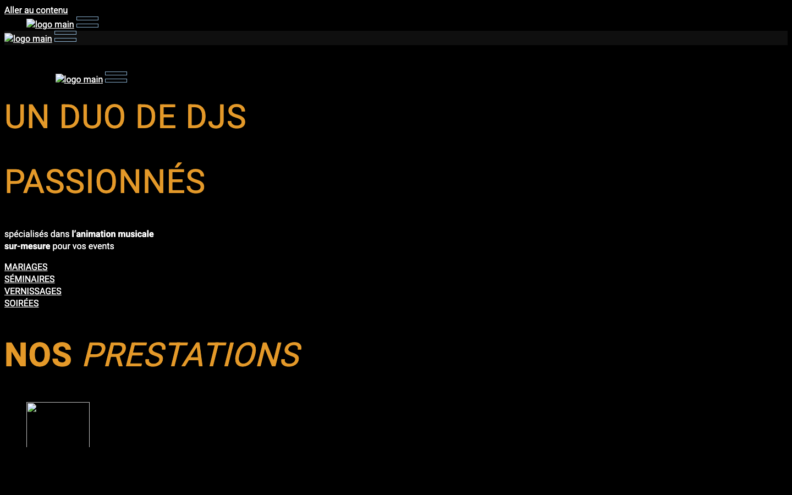
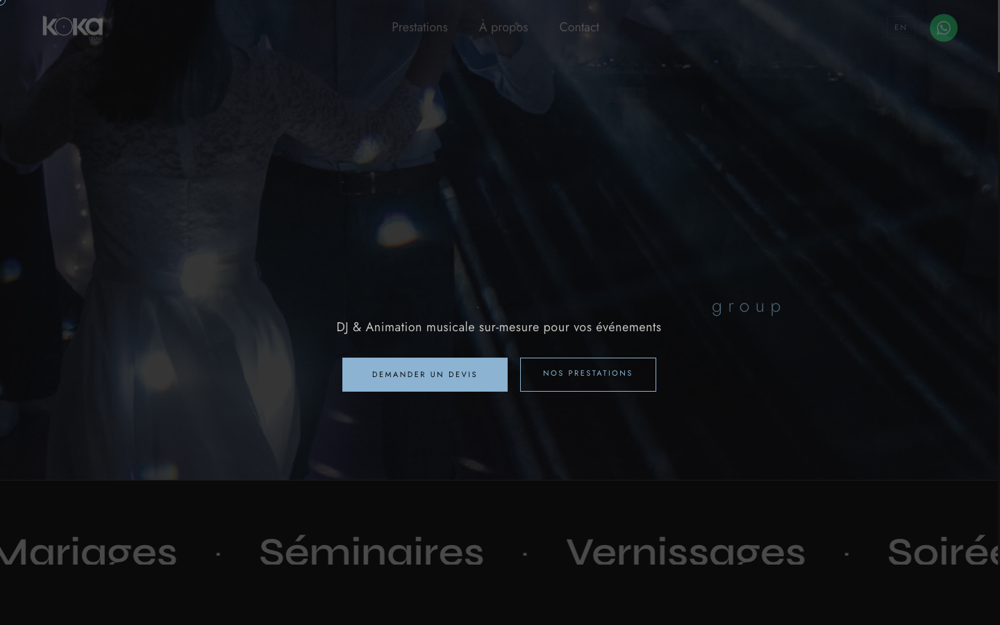
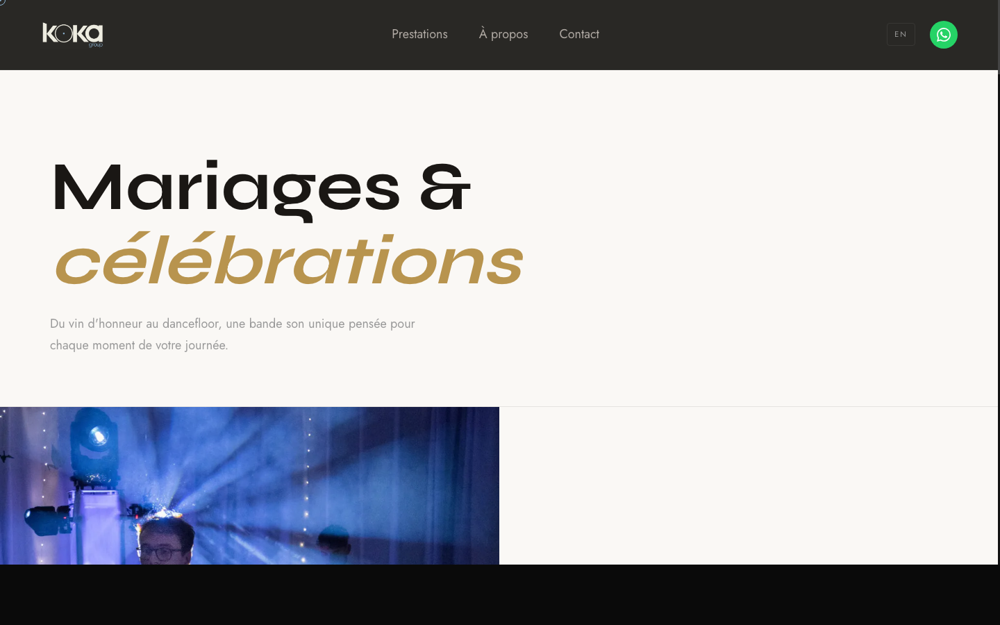
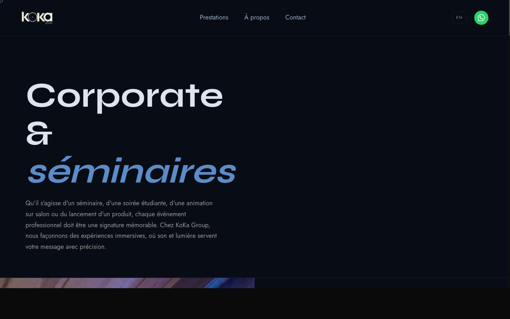
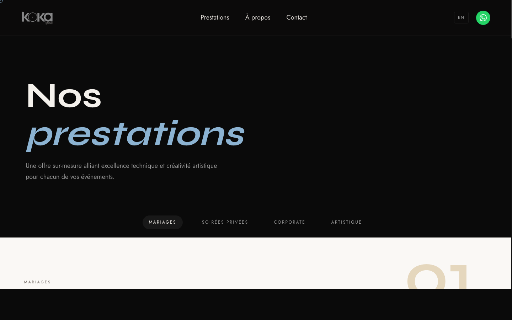
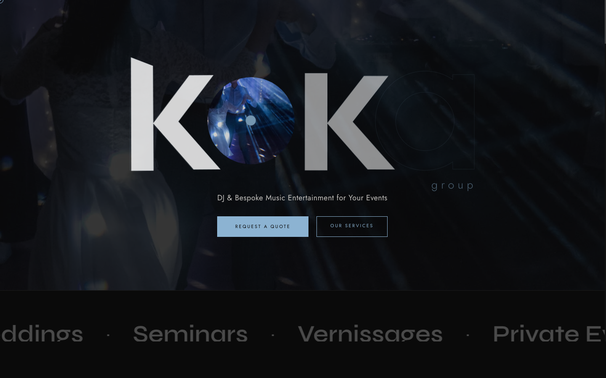
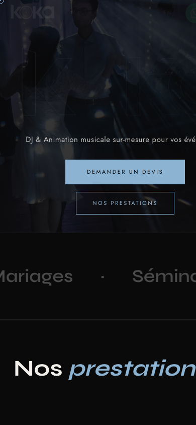

Audit, refonte UX/UI, SEO, performance, accessibilite et internationalisation du site koka-group.com
KOKA Group est un duo de DJs professionnels base a Nantes et Poitiers, specialise dans l'animation musicale sur-mesure : mariages, corporate, soirees privees et collaborations artistiques.
Le site en production presentait des limitations majeures qui freinaient la conversion et le referencement.

Avant — Site en production

Apres — Nouveau site
Chaque prestation a maintenant sa propre page avec un contenu structure et unique.

Mariages

Corporate

Prestations
8 pages francaises + 8 pages anglaises avec switcher de langue, structured data traduite et hreflang bidirectionnel.
Version francaise

Version anglaise
Langues parlees : Francais, Anglais, Espagnol, Italien
| Critere | Avant | Apres |
|---|---|---|
| Design & identite | 7/10 | 8.5/10 |
| UX / Conversion | 5/10 | 9/10 |
| SEO technique | 4/10 | 8.5/10 |
| Accessibilite | 4/10 | 8/10 |
| Performance | 5/10 | 8/10 |
| Contenu | 5/10 | 7.5/10 |
| Internationalisation | 0/10 | 8/10 |
| Score global | 5/10 | 8/10 |
Creer la fiche Google pour apparaitre dans le pack local. Priorite n1 pour le SEO.
Collecter 20 avis clients en 6 mois. Chaque avis renforce la credibilite.
Articles cibles : "Combien coute un DJ mariage", "Comment choisir son DJ"...
Un embed YouTube sur la homepage pour montrer l'ambiance en live.
Inscription sur 1001dj, Livetonight, Linkaband pour les backlinks.
Page dediee avec les evenements realises, lieux et photos.
KOKA Group — koka-group.com
Un site a la hauteur de votre ambition.
